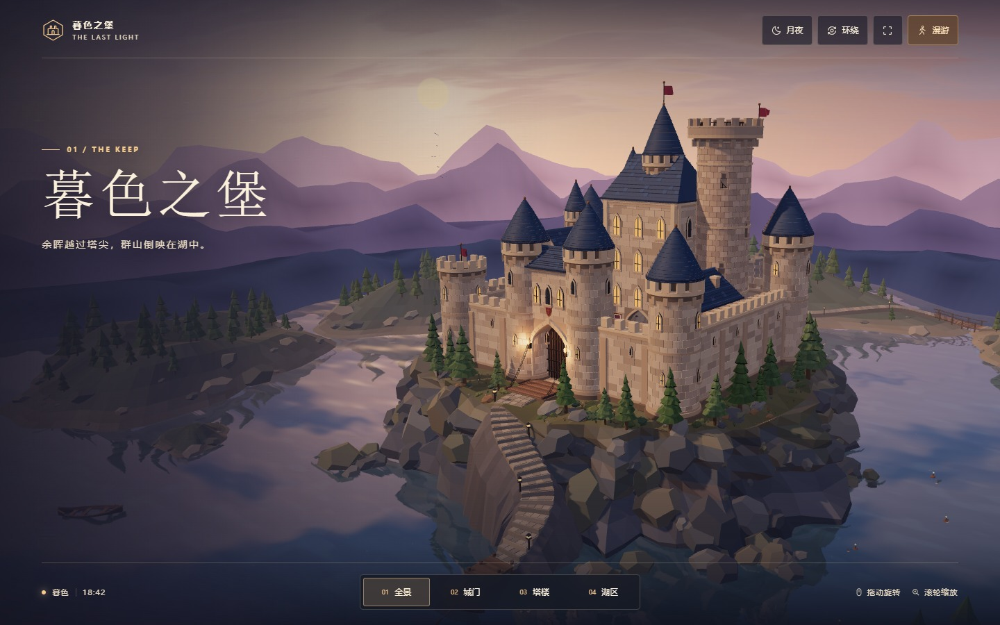

想进去看看
丰富的城堡、黄昏光影与湖面倒影，建立一个想去的地方。
基础画面已有原型暮色之堡 × 从零造物 / 研究全景图
RESEARCH ATLAS 01 · 2026.11.21
让科普、历史、音乐与农业，发生在同一个可以亲手参与的世界里。
世界先让人想留下来，
好奇再把人带向知识。我们的理解与探索方向



已实现桌面与触屏操作、本地离线运行、城内探索、岸上步道与往返。
已修正起点改到渔屋码头，船与路线对应，消除门框重叠闪烁。
这些实帧展示空间与操作原型。下文的秋集、水车、农业与音乐学习交互属于探索提案。
丰富的城堡、黄昏光影与湖面倒影，建立一个想去的地方。
基础画面已有原型步行、登船、靠岸、上山与登塔，形成连续的到访过程。
关注起点、方向与通行追问速度、惯性、重心、阻力和反馈，寻找愿意反复玩的动作。
更深的操控模型待建讨论闯关、副本、修仙、能力成长和任务推进等候选机制。
具体游戏类型仍开放把科普、历史、音乐和农业融入同一个世界，允许各自深入。
形成可验证的方向提案水车灌溉，谷物磨粮，粮船进城，集市称重，院落奏乐。一件事自然牵出多个领域。
可以循声去听，也可以停在水轮旁追问。玩家的驻足、尝试和问题，决定深入的路径。
先改变一个条件，看见差异，再查看剖面、原理与出处。解释随好奇逐层展开。
从“我看到了”走向“我能预测、能解释、能再次尝试”，并与现实观察和实验相连。
装一袋粮，观察吃水与偏载，再比较怎样摆放。
牵出浮力、重心与运输方式调节水闸，观察水斗怎样取水、抬水与倒水。
牵出水流、能量与灌溉工程改变灌溉条件，保留对照田，加速观察生长。
牵出土壤、季节与农业经验推动磨盘，比较进料，打开剖视查看磨齿。
牵出摩擦、加工与机械传动移动秤砣，看秤杆平衡，尝试称不同的货物。
牵出力矩、计量制度与交易循声跟奏，尝试指孔组合，比较结构与音高。
牵出发声、共鸣与乐器文化一袋谷物从田里到集市的旅程 把农业、技术、运输、历史与音乐串起来。
水轮停了，田边的水还在流。
把闸门再开一点，会怎样？
只改一个条件，保留对照。
看流量、转速和提水量。
换了水位，试着让田渠得到水。
先猜开闸后的变化，再观察水斗把水抬进高处田渠。打开剖视看清结构，最后面对不同水位或提水高度，调整装置并解释依据。
科技树、拍摄本、原理说明、资料来源、待核事项，为器物和生活提供可追查的内容起点。
地点、路线、器物与操作反馈，让玩家能走近、绕看和尝试，再决定要不要继续深入。
在场景中遇见器物 → 亲手尝试 → 查看原理 → 深入视频与实验记录
可对接的已有选题 水车提水 · 石磨 · 杆秤 · 陶埙
仓库将游戏化列为探索方向，具体方案需要小原型验证。
偶然遇见一件器物，找到原先不知道自己感兴趣的领域。
看自发停留、追问与重访把零散知识接成生活过程，理解不同地点如何相互影响。
看能否解释两个环节的联系靠近、绕看、剖视、加速时间，使结构和因果能被观察。
看新条件下的预测和判断已有脚本、实验方案与知识条目，可以衍生出可操作的场景。
看制作维护成本与复用程度家庭一起尝试，老师组织讨论，创作者继续回答新问题。
看讨论、分享和继续探索意愿亲子共探、青少年自主学习、课堂器物讨论、文化场馆体验。
先选一类使用者验证需求验证依据 主动停留、愿意重试、提出新问题、能解释原因、能把规律用到新情形。学习成效与使用意愿需要真实体验者验证。
待定首批体验者、时代地域、自由探索与任务推进的配合。
待建载重、水车、作物等学习模型，标出公式、单位和简化条件。
待核哥特式幻想城堡与北宋内容如何衔接，器物和文化组合需查证。
分别记录模型演示、史料依据和真实实验，明确每种结论的依据。